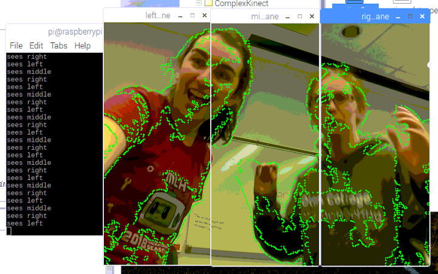
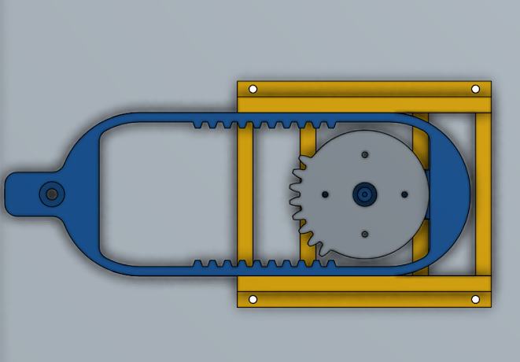
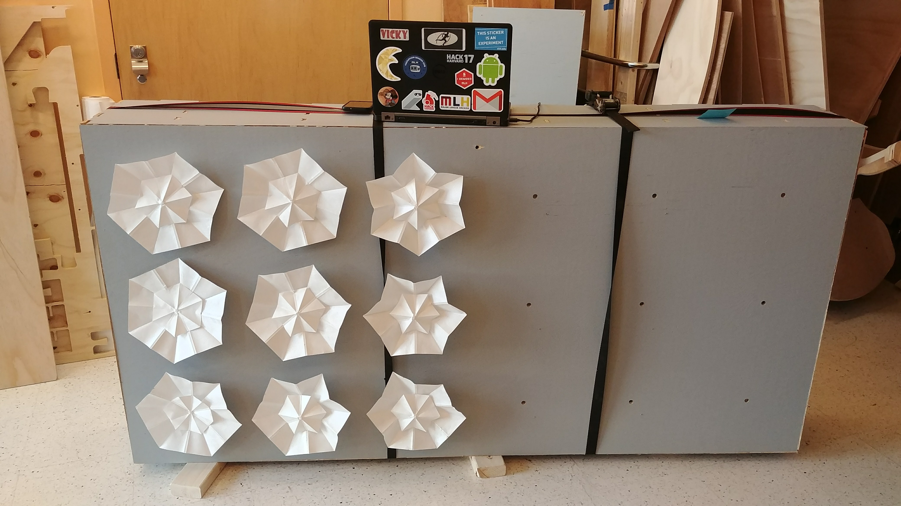
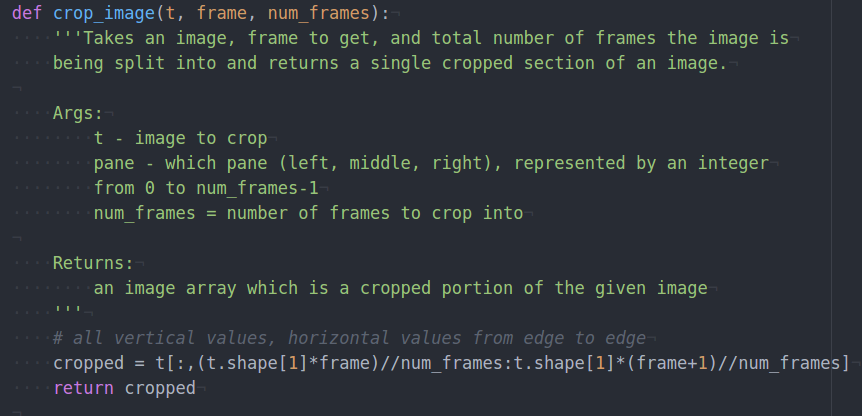

During our third sprint, we scaled up to our full system size (3ft by 8ft) and assembled 9 of the 18 nodes on our frame. We created a continuous geared slider system to open and close nodes by turning the servos in one direction, improved our motion detection code, and wrote our sound volume detection code. We also spent some time during this sprint improving our documentation and working on our website.
During this sprint, we implemented threading in our motion detection code to allow for delayed sending of serial messages while still running our camera processing code. We adjusted our design to send different messages for motion in multiple panes, and we modified our sound detection code from sprint 1 to send values to serial based on the loudness of sound in the environment surrounding the structure.
We were unable to use the brushless motors we bought without ESCs (an electrical component we did not have) and so halfway through the sprint we pivoted to use continuous rotation servos instead. Fortunately we were able to modify the servos we had in order to make them have continuous rotation. We made a continuous geared slider system to open and close 3 nodes at once using a continuous rack and pinion system. We made our nodes using Tyvek to increase durability and our full scale frame was made on the shopbot during this sprint.
One of our goals for this sprint was to scale our design from from a 2ft by 1.5ft matrix of 9 nodes to a 3ft by 9ft matrix of 18 nodes. We used 3D printers to manufacture our liniar sliders and racks for our rack and pinion system, laser cutters to make our gears and cut our origami nodes, and the shopbot to manufacture our large frame. During this process we also painted the wood for our frame an understated grey.
We also spent a great deal of time during this sprint improving upon our documentation. We added docstrings and detailed comments to all of our code and began cleaning up our repositories on git. We also got our website up and running on the Olin web server and filled in all the pages on our site with the most up to date information.
